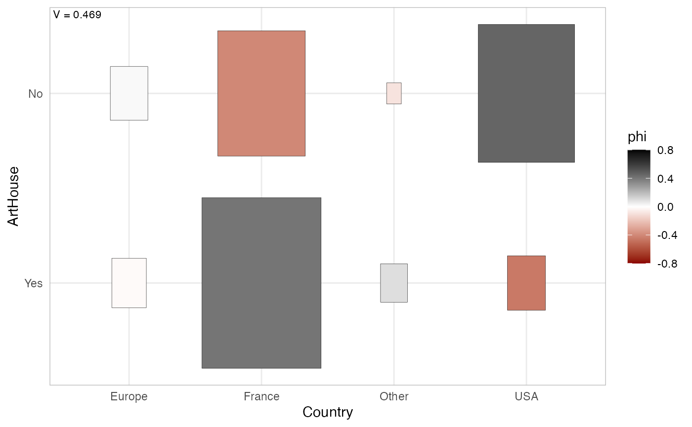
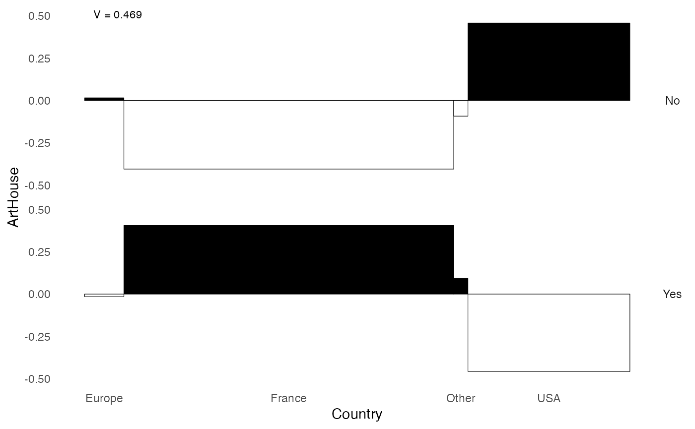
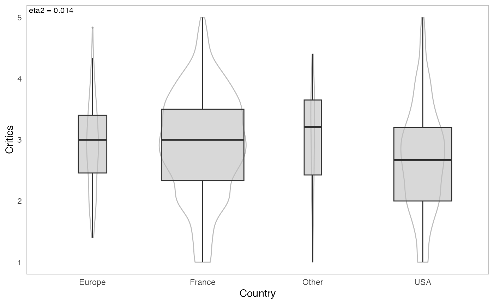
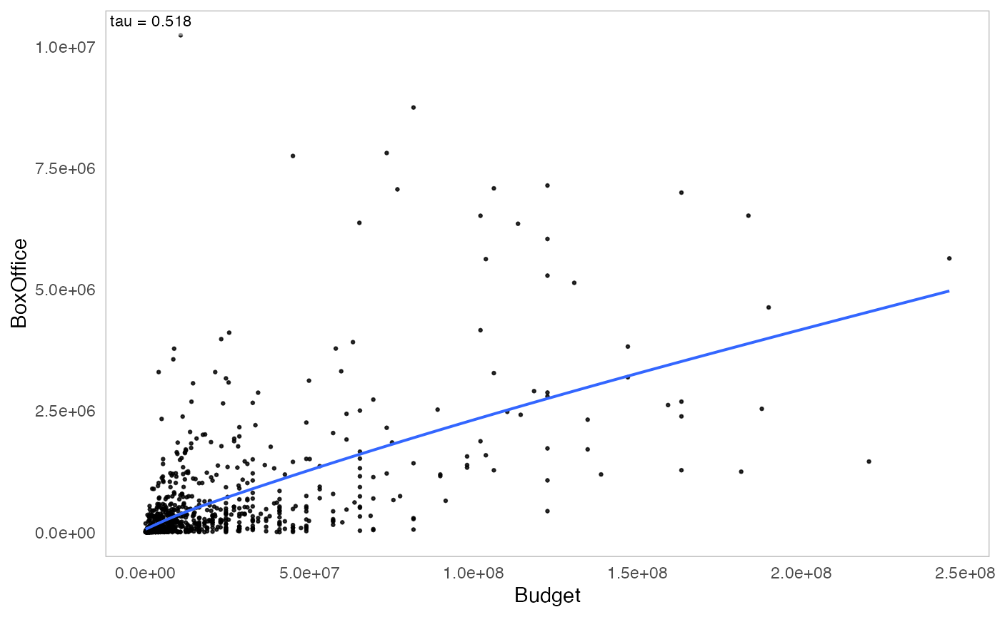
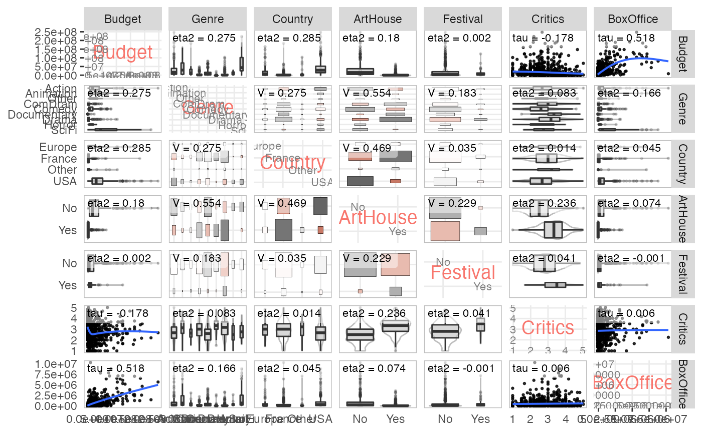

vignettes/french/Tutoriel_descr.Rmd
Tutoriel_descr.Rmd
Le package GDAtools fournit quelques fonctions dédiées à la description des associations statistiques entre variables. Elles s’appuient sur des mesures de taille d’effet (dites aussi mesures d’association).
Toutes ces mesures sont construites à partir de concepts simples (corrélations, proportion de variance expliquée), elles sont bornées (entre -1 et 1 ou entre 0 et 1) et ne sont pas sensibles aux effectifs.
Les mesures d’associations globales sont les suivantes.
Pour la relation entre deux variables catégorielles : le V de Cramér qui, contrairement au khi-deux par exemple, n’est pas sensible aux effectifs ou au nombre de modalités des variables. Il varie entre 0 (absence d’association) et 1 (association parfaite). Mis au carré, il peut être interprété comme la part de variation partagée entre deux variables.
Pour la relation entre deux variables continues : les corrélations de rang de Kendall (tau) ou de Spearman (rho), qui détectent les relations monotones entre variables, et non uniquement linéaires comme c’est le cas de la corrélation linéaire de Pearson. Elles varient entre -1 et 1. Une valeur absolue de 0 indique une absence d’association, une valeur absolue de 1 un association parfaite. Le signe indique le sens de la relation.
Pour la relation entre une variable catégorielle et une variable continue : le carré du rapport de corrélation (eta²). Il exprime la part de la variance de la variable continue “expliquée” par la variable catégorielle et varie entre 0 et 1.
En plus des mesures d’associations globales, on utilise aussi des mesures d’associations locales, c’est-à-dire au niveau des modalités des variables.
Pour la relation entre deux variables catégorielles: le coefficient phi mesure l’attraction ou la répulsion dans une case d’un tableau de contingence. Il varie entre -1 et 1. Une valeur absolue de 0 indique une absence d’association, une valeur absolue de 1 un association parfaite. Il y a attraction si le signe est positif, répulsion si le signe est négatif. Mis au carré, phi, s’interprète comme la proportion de variance partagée par les deux variables binaires associées aux modalités étudiées. Contrairement à la valeur-test, phi n’est pas sensible à la taille de l’échantillon.
Pour la relation entre une variable catégorielle et une variable continue: la corrélation bisériale ponctuelle mesure l’amplitude de l’écart entre les moyennes de la variable continue selon que l’on appartient ou non à la modalité étudiée. Elle varie entre -1 et 1. Une valeur absolue de 0 indique une absence d’association, une valeur absolue de 1 un association parfaite. Le signe indique le sens de la relation. Mise au carré, la corrélation bisériale ponstuelle peut s’interpréter comme la proportion de variance de la variable continue “expliquée” par l’appartenance à la modalité de la variable catégorielle.
A noter que si l’on code les modalités des variables catégorielles sous la forme de variables binaires de valeurs 0 ou 1, le coefficient phi et la corrélation bisériale ponctuelle sont équivalentes au coefficient de corrélation de Pearson.
Pour plus de détails sur ces mesures de taille d’effet, voir : Rakotomalala R., « Comprendre la taille d’effet (effect size) »
Dans certaines fonctions de GDAtools, les mesures d’association peuvent être complétées par des tests de permutation, qui relèvent de l’inférence combinatoire et constituent une alternative non paramétrique aux tests de signification de l’inférence fréquentiste. Un test de permutation se déroule en plusieurs étapes.
On calcule une mesure d’association entre les deux variables étudiées.
On calcule la même mesure d’association à partir d’une version “permutée” des données, c’est-à-dire en “mélangeant” aléatoirement les valeurs de l’une des variables, afin de “casser” la relation entre les variables.
On répète l’étape 2 un grand nombre de fois. On obtient ainsi une distribution empirique (par opposition avec l’utilisation d’une distribution théorique par l’inférence fréquentiste) de la mesure d’association sous l’hypothèse H0 d’absence de relation entre les deux variables.
On compare le résultat de l’étape 1 avec la distribution obtenue en 3. La p-value du test de permutation est la proportion de valeurs de la distribution H0 qui sont plus extrêmes que la mesure d’association observée en 1.
Si on réalise l’ensemble des permutations possibles, le test de permutation est dit “exact”. Dans la pratique, le temps de calcul nécessaire est souvent trop important et on ne réalise qu’une partie des permutations possibles, aboutissant à un test dit “approximatif”. Dans les exemples qui suivent, le nombre de permutations est fixé à 100 pour réduire le temps de calcul, mais il est conseillé d’augmenter ce nombre pour obtenir des résultats plus précis et fiables (par exemple nperm=1000).
Pour illustrer les fonctions d’analyse des associations statistiques de GDAtools, nous utiliserons des données sur le cinéma. Il s’agit d’un échantillon de 1000 films sortis en France dans les années 2000, pour lesquels on connaît le budget, le genre, le pays d’origine, la labellisation “art et essai”, la sélection en festival (Cannes, Berlin ou Venise), la note moyenne des critiques intellectuels (d’après Allociné) et le nombre d’entrées en salles. Certaines de ces variables sont continues, d’autres catégorielles.
'data.frame': 1000 obs. of 7 variables:
$ Budget : num 3.10e+07 4.88e+06 3.50e+06 1.63e+08 2.17e+07 ...
$ Genre : Factor w/ 9 levels "Action","Animation",..: 1 5 7 1 7 5 1 7 5 7 ...
$ Country : Factor w/ 4 levels "Europe","France",..: 4 2 2 1 2 2 4 4 2 4 ...
$ ArtHouse : Factor w/ 2 levels "No","Yes": 1 1 2 1 2 1 1 1 1 1 ...
$ Festival : Factor w/ 2 levels "No","Yes": 1 1 1 1 1 1 1 1 1 1 ...
$ Critics : num 3 1 3.75 3.75 3.6 2.75 1 1 1 3 ...
$ BoxOffice: num 1013509 24241 39376 6996996 493416 ...Le package propose plusieurs fonctions pour étudier la relation statistique entre deux variables, selon la nature (catégorielle ou continue) des ces variables.
La fonction assoc_twocat calcule :
assoc.twocat(Movies$Country, Movies$ArtHouse, nperm=100)$freq
No Yes Sum
Europe 39 33 72
France 212 393 605
Other 6 20 26
USA 257 40 297
Sum 514 486 1000
$prop
No Yes Sum
Europe 3.9 3.3 7.2
France 21.2 39.3 60.5
Other 0.6 2.0 2.6
USA 25.7 4.0 29.7
Sum 51.4 48.6 100.0
$rprop
No Yes Sum
Europe 54.16667 45.83333 100
France 35.04132 64.95868 100
Other 23.07692 76.92308 100
USA 86.53199 13.46801 100
Sum 51.40000 48.60000 100
$cprop
No Yes Sum
Europe 7.587549 6.790123 7.2
France 41.245136 80.864198 60.5
Other 1.167315 4.115226 2.6
USA 50.000000 8.230453 29.7
Sum 100.000000 100.000000 100.0
$expected
No Yes
Europe 37.008 34.992
France 310.970 294.030
Other 13.364 12.636
USA 152.658 144.342
$chi.squared
[1] 220.1263
$cramer.v
[1] 0.4691762
$permutation.pvalue
[1] 0
$pearson.residuals
No Yes
Europe 0.3274474 -0.3367479
France -5.6123445 5.7717531
Other -2.0143992 2.0716146
USA 8.4449945 -8.6848595
$phi
No Yes
Europe 0.01541876 -0.01541876
France -0.40506773 0.40506773
Other -0.09258656 0.09258656
USA 0.45688150 -0.45688150
$phi.perm.pval
No Yes
Europe 3.028800e-01 3.028800e-01
France 1.386510e-42 0.000000e+00
Other 3.512898e-03 3.512898e-03
USA 0.000000e+00 1.629704e-40
$local.pem
No Yes
Europe 5.7 -5.7
France -51.6 51.6
Other -55.1 55.1
USA 72.3 -72.3
$global.pem
[1] 59.3
$gather
Var1 Var2 Freq prop rprop cprop expected std.residuals phi perm.pval local.pem
1 Europe No 39 0.039 0.5416667 0.07587549 37.008 0.3274474 0.01541876 3.028800e-01 5.7
2 France No 212 0.212 0.3504132 0.41245136 310.970 -5.6123445 -0.40506773 1.386510e-42 -51.6
3 Other No 6 0.006 0.2307692 0.01167315 13.364 -2.0143992 -0.09258656 3.512898e-03 -55.1
4 USA No 257 0.257 0.8653199 0.50000000 152.658 8.4449945 0.45688150 0.000000e+00 72.3
5 Europe Yes 33 0.033 0.4583333 0.06790123 34.992 -0.3367479 -0.01541876 3.028800e-01 -5.7
6 France Yes 393 0.393 0.6495868 0.80864198 294.030 5.7717531 0.40506773 0.000000e+00 51.6
[ reached 'max' / getOption("max.print") -- omitted 2 rows ]
La fonction ggassoc_crosstab présente le tableau de contingence sous forme graphique, avec des rectangles dont la surface correspond aux effectifs et le gradient de couleurs aux attractions/répulsions (coefficients phi). Le V de Cramér peut être affiché dans un angle du graphique. Ici, le label “art et essai” est nettement sur-représenté parmi les films français et sous-représenté parmi les films étatsuniens.
ggassoc_crosstab(Movies, ggplot2::aes(x=Country, y=ArtHouse), max.phi=0.8)
La fonction ggassoc_phiplot propose une autre manière de représenter les attractions/répulsions. La largeur des rectangles correspond aux effectifs de la variable x, leur hauteur aux coefficients phi. Les rectangles sont colorés en noir lorsqu’il y a attraction, en blanc lorsqu’il y a répulsion.
ggassoc_phiplot(Movies, ggplot2::aes(x=Country, y=ArtHouse))
La fonction assoc_catcont calcule :
assoc.catcont(Movies$Country, Movies$Critics, nperm=100)$eta.squared
[1] 0.0169216
$permutation.pvalue
[1] 1.152463e-07
$cor
Europe France Other USA
0.011 0.102 0.036 -0.128
$cor.perm.pval
Europe France Other USA
3.659026e-01 8.263845e-04 1.172509e-01 1.953981e-05
La fonction ggassoc_boxplot représente la relation entre les variables sous forme de boîtes à moustaches (box-plots) et/ou de distributions “en violons”. La valeur de l’eta² est affichée dans un angle du graphique.
ggassoc_boxplot(Movies, ggplot2::aes(x=Country, y=Critics))
La fonction assoc_twocont calcule les corrélations de rang de Kendall et de Spearman et la corrélation linéaire de Pearson, ainsi que les p-values des tests de permutation correspondants.
assoc.twocont(Movies$Budget, Movies$BoxOffice, nperm=100) pearson spearman kendall
value 0.6053018 0.7084613 0.5184719
permutation.pvalue 0.0000000 0.0000000 0.0000000
La fonction ggassoc_scatter représente la relation entre les deux variables sous forme d’un nuage de points, avec une approximation par lissage (avec la méthode de “Generalized Additive Model”). Le tau de Kendall est affiché dans un angle du graphique.
ggassoc_scatter(Movies, ggplot2::aes(x=Budget, y=BoxOffice))
Bien souvent, on n’étudie pas seulement deux variables, mais un ensemble plus important de variables. Lorsqu’une de ces variables a le statut de variable “à expliquer”, on utilise généralement des modèles de régression ou, éventuellement, des modèles d’apprentissage surpervisé (voir la vignette du package moreparty pour un exemple). Il est cependant indispensable de bien connaître l’ensemble des relations bivariées du jeu de données avant de passer à une approche “toute chose égale par ailleurs”.
On notera d’ailleurs que si on fait ce travail de manière minutieuse, en y ajoutant éventuellement l’analyse descriptive des relations entre trois ou quatre variables, on s’aperçoit souvent que le surplus de connaissance apporté par les modèles de régression est assez limité.
La fonction assoc.yx calcule l’association globale entre Y et chacune des variables de X, ainsi que pour toutes les paires de variables de X.
assoc.yx(Movies$BoxOffice, Movies[,-7], nperm=100)$YX
variable measure association permutation.pvalue
1 Genre Eta2 0.173 0.000
2 ArtHouse Eta2 0.075 0.000
3 Country Eta2 0.048 0.000
4 Budget Kendall's tau 0.518 0.000
5 Critics Kendall's tau 0.006 0.340
6 Festival Eta2 0.000 0.769
$XX
variable1 variable2 measure association permutation.pvalue
1 Genre ArtHouse Cramer's V 0.554 0.000
2 Country ArtHouse Cramer's V 0.469 0.000
3 Genre Country Cramer's V 0.275 0.000
4 ArtHouse Festival Cramer's V 0.229 0.000
5 Budget Country Eta2 0.287 0.000
6 Budget Genre Eta2 0.281 0.000
7 ArtHouse Critics Eta2 0.236 0.000
8 Budget ArtHouse Eta2 0.181 0.000
9 Genre Critics Eta2 0.090 0.000
10 Festival Critics Eta2 0.041 0.000
11 Budget Critics Kendall's tau -0.178 0.000
12 Country Critics Eta2 0.017 0.000
13 Genre Festival Cramer's V 0.183 0.000
14 Budget Festival Eta2 0.003 0.093
15 Country Festival Cramer's V 0.035 0.748
Les fonctions catdesc et condesc permettent de rentrer plus dans le détail des relations, en passant au niveau des modalités.
catdesc traite les cas où Y est une variable catégorielle. Pour une variable catégorielle X1, elle calcule, pour une modalité de Y et une modalité de X1 données :
Les résultats sont triés par coefficient phi décroissant et peuvent être filtrés pour ne conserver que les associations supérieures à un seuil donné (en valeur absolue).
Pour une variable continue X2, pour une modalité de Y donnée, elle calcule :
La dispersion est mesurée par l’écart absolu médian (MAD), c’est-à-dire la médiane des écarts absolus par rapport à la médiane. La médiane et le MAD sont des indicateurs dits “robustes”, non sensibles aux valeurs aberrantes.
catdesc(Movies$Festival, Movies[,-5])$bylevel$Yes$categories
categories pct.ycat.in.xcat pct.xcat.in.ycat pct.xcat.global phi
2 ArtHouse.Yes 0.140 0.883 0.486 0.229
3 Genre.Drama 0.149 0.468 0.241 0.153
9 Genre.Other 0.115 0.039 0.026 0.024
10 Country.Europe 0.097 0.091 0.072 0.021
11 Country.France 0.081 0.636 0.605 0.019
12 Genre.ComDram 0.087 0.169 0.149 0.016
14 Genre.Action 0.079 0.169 0.165 0.003
16 Country.Other 0.077 0.026 0.026 0.000
18 Genre.SciFi 0.061 0.039 0.049 -0.013
23 Country.USA 0.064 0.247 0.297 -0.032
24 Genre.Animation 0.022 0.013 0.046 -0.046
25 Genre.Horror 0.000 0.000 0.025 -0.046
26 Genre.Documentary 0.026 0.026 0.077 -0.055
27 Genre.Comedy 0.027 0.078 0.222 -0.100
29 ArtHouse.No 0.018 0.117 0.514 -0.229
$continuous.var
variables median.x.in.ycat median.x.global mad.x.in.ycat mad.x.global cor
1 Critics 3.5 2.9 0.6 0.6 0.204
3 BoxOffice 236910.7 138608.8 212598.2 137253.1 0.008
5 Budget 7689956.0 7040470.9 4865250.9 5920656.2 -0.057condesc traite les cas où Y est une variable continue. Pour une variable catégorielle X1, elle calcule :
Les résultats sont triés par corrélation bisériale ponctuelle décroissante et peuvent être filtrés pour ne conserver que les associations supérieures à un seuil donné (en valeur absolue).
Pour les variables continues de X, elle calcule le tau de Kendall.
condesc(Movies$BoxOffice, Movies[,-7], nperm=100)$variables
variable measure association permutation.pvalue
1 Genre Eta2 0.173 0.000
2 ArtHouse Eta2 0.075 0.000
3 Country Eta2 0.048 0.000
4 Budget Kendall's tau 0.518 0.000
5 Critics Kendall's tau 0.006 0.491
6 Festival Eta2 0.000 0.716
$categories
categories median.y.in.xcat median.y.global mad.y.in.xcat mad.y.global cor
9 Genre.SciFi 944784 138609 853626 137253 0.294
14 ArtHouse.No 298718 138609 257715 137253 0.274
2 Genre.Animation 954956 138609 853018 137253 0.211
13 Country.USA 356692 138609 286508 137253 0.192
1 Genre.Action 291945 138609 247538 137253 0.087
10 Country.Europe 153755 138609 150015 137253 0.068
17 Festival.Yes 228749 138609 207635 137253 0.008
5 Genre.Comedy 230615 138609 210550 137253 0.004
3 Genre.Other 249037 138609 231954 137253 -0.005
16 Festival.No 129629 138609 127957 137253 -0.008
12 Country.Other 64893 138609 46042 137253 -0.013
8 Genre.Horror 293118 138609 176131 137253 -0.015
[ reached 'max' / getOption("max.print") -- omitted 5 rows ]
La fonction darma présente les résultats sous une forme proche de celle d’un tableau de résultats d’une régression.
Lorsque la variable Y est continue, la fonction calcule :
darma(Movies$BoxOffice, Movies[,-7], nperm=100)| variable | category | median | association | perm.pvalue |
|---|---|---|---|---|
| Budget | NA | 0.518 | 0.000 | |
| Genre | Action | 301483.7 | 0.087 | 0.004 |
| Animation | 990790.2 | 0.211 | 0.000 | |
| Other | 254002.8 | -0.005 | 0.466 | |
| ComDram | 96221.7 | -0.114 | 0.000 | |
| Comedy | 236703.8 | 0.004 | 0.406 | |
| Documentary | 13823.2 | -0.108 | 0.001 | |
| Drama | 51111.1 | -0.162 | 0.000 | |
| Horror | 296015.2 | -0.015 | 0.297 | |
| SciFi | 989158.5 | 0.294 | 0.000 | |
| Country | Europe | 161441.5 | 0.068 | 0.010 |
| France | 82312.8 | -0.211 | 0.000 | |
| Other | 64304.0 | -0.013 | 0.412 | |
| USA | 366233.7 | 0.192 | 0.000 | |
| ArtHouse | No | 307344.0 | 0.274 | 0.000 |
| Yes | 47084.8 | -0.274 | 0.000 | |
| Festival | No | 134006.6 | -0.008 | 0.416 |
| Yes | 236910.7 | 0.008 | 0.431 | |
| Critics | NA | 0.006 | 0.360 |
Lorsque la variable Y est catégorielle, la fonction calcule :
darma(Movies$Festival, Movies[,-5], target=2, nperm=100)| variable | category | percent | association | perm.pvalue |
|---|---|---|---|---|
| Budget | NA | -0.057 | 0.021 | |
| Genre | Action | 7.9 | 0.003 | 0.490 |
| Animation | 2.2 | -0.046 | 0.066 | |
| Other | 11.5 | 0.024 | 0.212 | |
| ComDram | 8.7 | 0.016 | 0.284 | |
| Comedy | 2.7 | -0.100 | 0.000 | |
| Documentary | 2.6 | -0.055 | 0.045 | |
| Drama | 14.9 | 0.153 | 0.000 | |
| Horror | 0.0 | -0.046 | 0.085 | |
| SciFi | 6.1 | -0.013 | 0.336 | |
| Country | Europe | 9.7 | 0.021 | 0.278 |
| France | 8.1 | 0.019 | 0.267 | |
| Other | 7.7 | 0.000 | 0.511 | |
| USA | 6.4 | -0.032 | 0.170 | |
| ArtHouse | No | 1.8 | -0.229 | 0.000 |
| Yes | 14.0 | 0.229 | 0.000 | |
| Critics | NA | 0.204 | 0.000 | |
| BoxOffice | NA | 0.008 | 0.741 |
Pour finir, les fonctions ggassoc_* sont prévues pour pouvoir s’intégrer dans les matrices de graphiques du package GGally. Il est donc possible de les utiliser pour représenter dans un seul graphique l’ensemble des relations bivariées d’un groupe de variables.
library(GGally)
ggpairs(Movies,
lower = list(continuous = ggassoc_scatter,
combo = ggassoc_boxplot,
discrete = ggassoc_crosstab),
upper = list(continuous = ggassoc_scatter,
combo = ggassoc_boxplot,
discrete = ggassoc_crosstab),
diag = list(continuous = wrap("diagAxis", gridLabelSize = 3),
discrete = wrap("diagAxis", gridLabelSize = 3)))